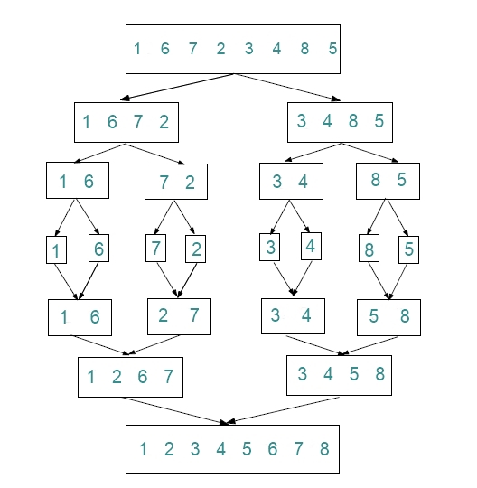

Merge Sort: Merge sort is a sorting algorithm that uses the idea of divide
and conquer. This algorithm divides the array into two halves, sorts them
separately and then merges them. This procedure is recursive, with the base
criterion-the number of elements in the array is not more than 1. Suppose variable
low and high represents the index of the first and last element of the array
respectively, the merge sort can be defined recursively as:
Algorithm for Merge sort
If(low < high) then
Divide the list into two halves
Mergesort the left half
Mergesort the right half
Mergesort the two sorted halves into one sorted list
Example:
The Diagramic representation for Merge Sort of Array of Elements
{ 1 , 6 , 7 , 2 , 3 , 4 , 8 , 5 }

Time Complexity:
Best case : O (n log n)
Average case : O (n log n)
Worst case : O (n log n)